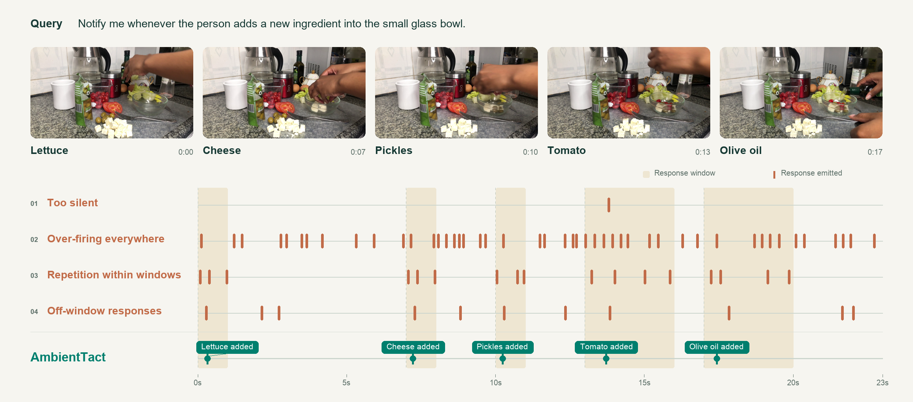
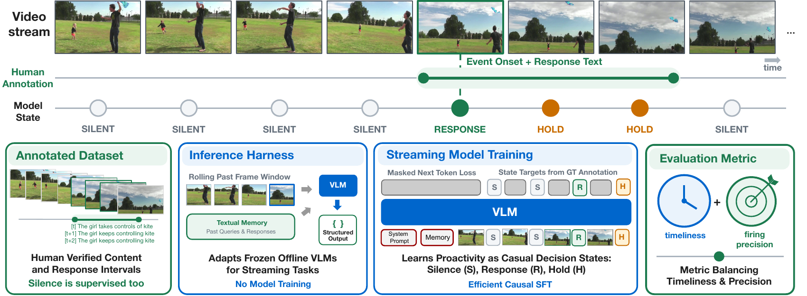

SALESFORCE AI RESEARCH
Intelligence with a sense of timing.
Playback could not start. Try the player controls or open the video.
01 / 10
Salad ingredients

01 / THE EVIDENCE
Clear improvements over
state-of-the-art baselines.
We report PAUC-F, a proactive video question-answering metric that balances timeliness and precision.
Timely and selective responding
020406080100
PAUC-F ↑ · ω = 0.5 · GPT-4.1 judge · scale 0–100
02 / THE FRAMEWORK
Teach awareness.
Learn restraint.

03 / DETAILED EVALUATIONS
Across benchmarks.
Four Common Models. Two Partial Models. Nine Evaluation Axes.